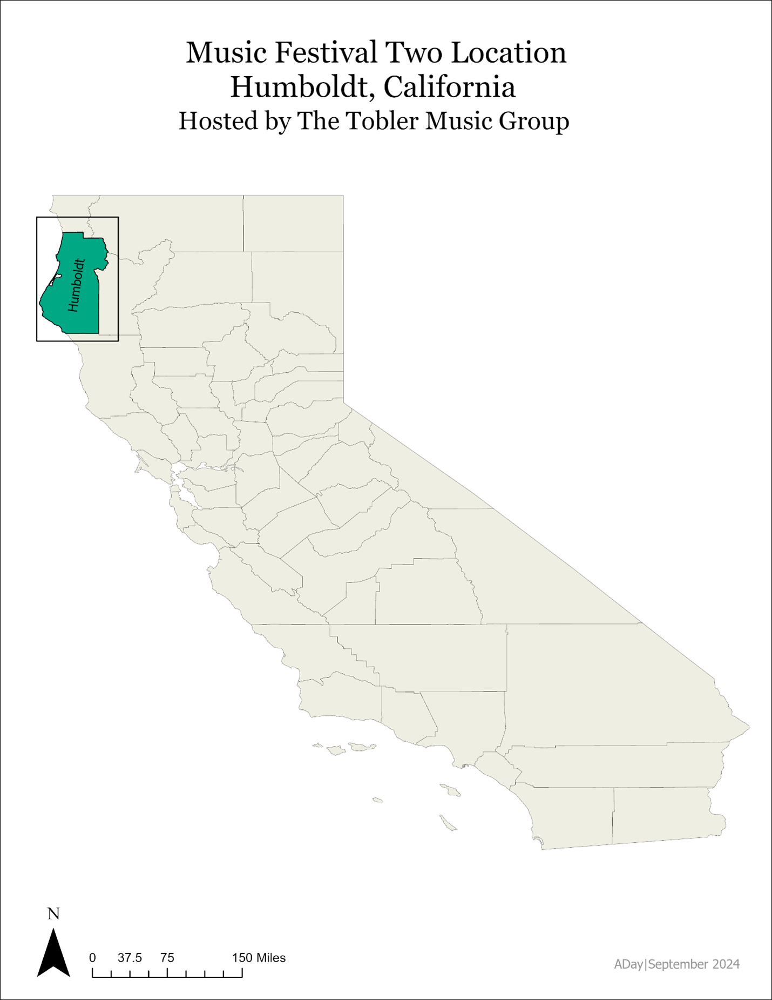
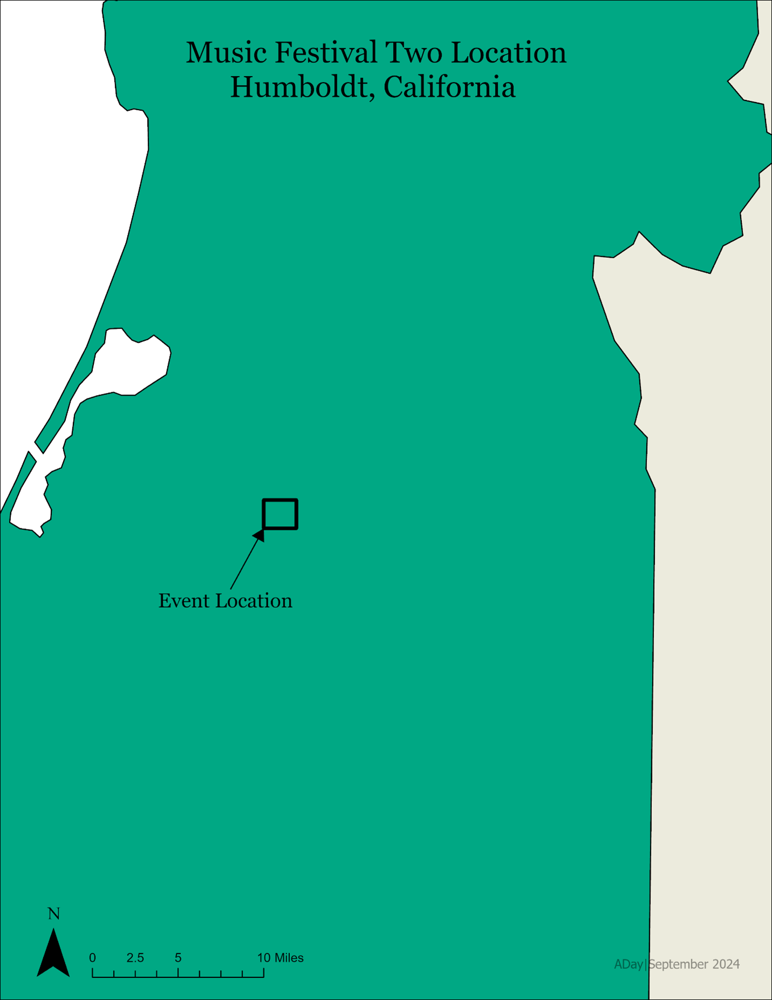

Tobler Music Festival Two: Geospatial Analysis & Site Location
Adam Day | September, 2024
ABSTRACT
A geospatial analysis was conducted for the Tobler Music Group Site Selection Committee to identify optimal areas for the upcoming Music Festival Two, scheduled in October 2024. Using ArcGIS Pro, the analysis calculated the area of available land to establish maximum capacity for parking lots, camping areas, and the event field. This analysis ensures that sufficient space is to provide for festival attendees, event staff, security, and medical personnel while accounting for unsuitable topography and maintaining regulatory compliance. Aerial imagery and parcel boundary data were used to identify areas for parking, camping, and event activities. Calculations were made based on current fire and safety regulations and operational needs. Additionally, this analysis conducted a spatial assessment of the available lodging and leisure facilities situated within a radius of 30 km to support event planning and reduce congestion on site. This assessment highlights capacity metrics to ensures the festival will successfully accommodate the adequate number of attendees while adhering to local fire and safety regulations.
INTRODUCTION
The purpose of this report is to assist the Tobler Music Group site selection committee in their geospatial analysis efforts for the upcoming Music Festival Two hosted in October 2024. ArcGIS Pro was used in the evaluation of current available land to determine max capacities for parking spaces, camping spaces, and the event field to ensure adequate space is given as to not overwhelm the site. Special considerations were taken to include allocation of space for staff, security, and medical personnel while accounting for unusable areas in the surrounding vicinity. This analysis used current aerial imaging of the selected site as well as parcel boundary information to establish locations best suited for parking, camping, and the event field. The two map figures below show the location of the event at the state level and the local level.
Figure 1: Music Festival Two Location - State Level
Figure 2: Music Festival Two Location - Local Level
METHODS
The analysis began with geospatial data retrieved from Humboldt State University Online Geospatial department, which included several data layers stored within a pre-established geodatabase. These layers include eventsite.shp, imagery.tif, LeisureSpots.shp, and Lodging.shp. Each shapefile was exported into a working folder, while the raster file was converted into an IMAGINE file format via the Copy Raster tool in ArcGIS Pro. The spatial reference system used for this analysis was NAD 83 UTM Zone 10 N, appropriate for the northwestern California location of the event site. Each layer was verified to ensure the spatial reference system consistency. Figure 3 below shows the map created using this workflow.
To determine parking lot size and number of permitted vehicles, a new shapefile titled parking.shp was created. This shapefile was then digitized to reflect the area outlined by the site selection committee which included land on the northern parcel, just below the driveway, and to the western edge of the tree line. Various points along these boundaries were plotted to create the polygon encompassing this area. Four fields were added to the attribute table of this shapefile. The “Name” field was added as a text field type for labeling purposes. The “Area” field was added as a double field type and was used for determining the parking lot area in square meters. The “Count” field was added as a long field type and was used for determining the number of parking spaces available. Lastly, the “Capacity” field was added as a long integer field type to estimate the number of attendees based on parking spaces. The area of the parking lot was then calculated in the Area field via the ‘Calculate Geometry’ tool located in the attribute table of parking.shp. Table 1 below reflects the outcome of this calculation.
After the calculating the parking lot area in square meters, estimations of the parking lot were determined based on the following criteria:
This calculation was completed via the following formula:
Parking Spaces=(Area*0.8)/30 -20
In the Field Calculator tool, the following script was used to achieve this formula in the Count field:
(!Area! * 0.8 / 30) – 20
Results for each of these outcomes are listed below in Table 1.
A similar workflow was used in creating the Event Field shapefile (EventField.shp). The siting committee determined the best location for this area is the middle parcels just behind the residence on the west side of the parking lot and encompasses the accessible area between the trees while the southern boundary will be a straight line between the trees. The eastern boundary is also a straight line between the large opening in the nearby trees. Four field identical to the parking lot field were created for this shapefile and estimates for the Event Field Capacity were determined using the following criteria:
To determine reserved area, the following formula was used:
Remaining Area=200+500
This value (700) was subtracted from the calculated area of the Event Field to determine the remaining area. The follow formula was used to determine the maximum capacity calculation:
Capacity=(Remaining Area)/2
Using the Field Calculator too in ArcGIS, the following scrip achieved this formula result:
int((!Area! - 700) / 2)
Lastly, max capacity of the Event Field (110%) was calculated in the Capacity field using the following script:
!Count! * 1.10
Results for each of these outcomes are listed below in Table 1.
To determine campsite locations, both the middle and parcels were dissolved into one shapefile. Next, using the Erase tool, the eventfield.shp shapefile was used as the erasing feature over the combined middle and lower parcels shapefile. This produced the Campsites.shp shapefile. Once the campsite locations were determined, estimated capacity for the camping area was calculated under the following criteria:
This was calculation was achieved using a similar process flow as before. Reserve area calculation is as follows:
Reserved area=22,000+12,000
Total area reserved for staff campsites was determined by:
Staff sites=10 x 8,000
Then, the remaining area was calculated using the following formula:
Remaining Area=Total Area-34,000-8,000
“Total Area” in this calculation refers to the total parcel area as calculated via the ‘Calculate Geometry’ tool in ArcGIS Pro.
Finally, the total number of campsites was calculated using the following formula:
Public Campsites=(Remaining Area)/800
As before, these values were added to the Field Calculator tool to calculate the number of campsites available. The follow scrip was used in the Count field for this calculation:
int((!Shape_Area! - 34000 - 8000) / 800)
The committee has limited each campsite to a max occupancy of eight people per site, therefore the following scrip was used to calculate max occupancy per campsite:
!Count! * 8
Results for each of these outcomes are listed below in Table 1.
The last geospatial analysis performed for this event was one to determine the number of leisure spots and lodging sites within a 30 km radius from the music festival. This was achieved by performing a spatial join between the eventfield.shp feature and the LeisureSpots.shp feature. The join operation used was JOIN_ONE_TO_ONE with a match option of WITHIN_A_DISTANCE of 30 km radius. The same operation was performed for the Lodging.shp using the same join operation and match options. Results for these outcomes can be found below in Table 2.
RESULTS
The map shown below displays the outcome of the geospatial analysis performed for the Music Festival Number Two. As made evident by the separate-colored polygons, a clear delineation can be seen between the northern Parking Lot area shaded in grey, the northwestern Event Field location shaded in pink, and the surrounding Campsite locations shaded in green.

Figure 1: Music Festival Two Map
The Parking Lot area encompasses an area of 23,961 square meters and will support a maximum number of 619 cars allowing for a total of 1857 festival goers using a three person per car estimate. The Event Field contains 18,414 square meters of area and will provide enough space for approximately 8,857 festival goes with a cushion of 2 square meters per person taken into consideration per local fire and safety regulations. Max capacity of this number was determined to be 110% of this count, or 9,743 total people. Given the number of available parking spaces for this event is well below the max number of people able to fit in the Event Field, spacing and overcrowding of the Event Field should be a none-issue. Lastly, the total Campsite area was determined to be 20,212.6 square meters supporting a total of 200 campsites, with 8 persons per campsite this equates to a maximum campsite capacity of 1,600 total people. While the parking lot capacity does exceed the camping max capacity by 257 people, it is important to note that not every festival goer will decide to camp at the Music Festival and daily commuters will be a necessity. See below for a table breakdown of this data.
| Name | Area [sq m] | Count | Capacity |
|---|---|---|---|
| Parking | 23961 | 618 | 1857 |
| Event Field | 18414 | 8857 | 9743 |
| Campsites | 202212 | 200 | 1600 |
With daily commuting in mind, it was determined that a total of 41 lodging locations existing with a 30 sq km radius from the Music Festival. This will offload some of the burden put on the Music Festival event location by allowing for individuals to attend the Music Festival while also returning to a lodging location each night, eliminating the need for additional campgrounds. Additionally, 29 suitable leisure spots were located within this 30 sq km radius of the Music Festival, allowing for individuals to vacate the festival and return at their convenience, once again reducing total load placed on the Music Festival grounds.
CONCLUSION
With the upcoming Music Festival Two scheduled next month, adequate space must remain a top priority for a successful event. The geospatial analysis performed in this assessment determined the festival should account for a total of 8857 attendees with a max capacity (110% of total) being 9743. This amount will allow for the festival to remain in compliance with current fire and safety regulations. The committee should plan to provide a total of 618 parking lot spaces in addition to the amount of parking required for event staff. Due to the limited number of parking spaces compared to total number of attendees, provisions for public transport methods such as busing or Uber services should be factored into planning and coordinating vehicle traffic flow. Lastly, festival camping should provide adequate space for 200 individual campsites with each site providing enough space for 8 individuals. This equates to a max camping capacity of 1600 people. It was determined that within a 30 sq km radius from Music Festival Two, 41 lodging facilities are available to provide overnight stay for festival goers who do not intend to camp. 29 leisure spots are included within this 30 sq km radius and should provide festival goers with alternative means to entertainment should they wish to seek it.
← Back to Geospatial Projects